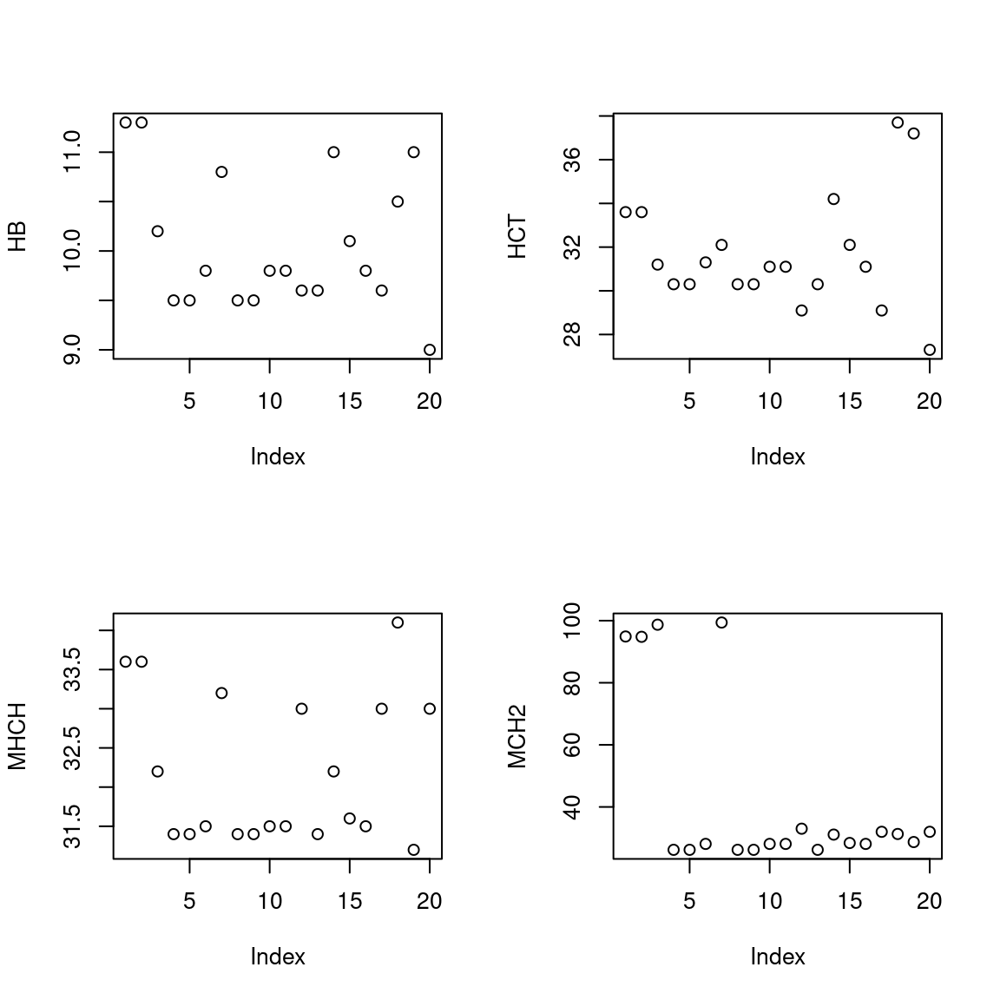

library(tidyverse)
library(DiagrammeR)
library(haven)
library(gt)
library(gtsummary)COTIK - Coba Statistik
Library
Mari kita load beberapa modul untuk melakukan perhitungan statistik yang dibutuhkan.
Linear Regression & Correlation
Load Data
Langkah pertama adalah load data dari file tugas berupa file .sav (file worksheet SPSS) dengan modul Haven.
data_cor <- read_sav("Latihan statistik MKDU PPDS! September 2023.sav")Overview Data
Mari kita intip dulu dimensi datanya.
Melihat Variabel-variabel pada data
names(data_cor)[1] "Hb" "Hct" "MHCH" "MCH2"Melihat jumlah Row
nrow(data_cor)[1] 20Cek jenis Variabel
str(data_cor)tibble [20 × 4] (S3: tbl_df/tbl/data.frame)
$ Hb : num [1:20] 11.3 11.3 10.2 9.5 9.5 9.8 10.8 9.5 9.5 9.8 ...
..- attr(*, "format.spss")= chr "F8.2"
$ Hct : num [1:20] 33.6 33.6 31.2 30.3 30.3 31.3 32.1 30.3 30.3 31.1 ...
..- attr(*, "format.spss")= chr "F8.2"
$ MHCH: num [1:20] 33.6 33.6 32.2 31.4 31.4 31.5 33.2 31.4 31.4 31.5 ...
..- attr(*, "format.spss")= chr "F8.2"
$ MCH2: num [1:20] 94.9 94.8 98.7 26.2 26.2 28.1 99.4 26.2 26.2 28.1 ...
..- attr(*, "format.spss")= chr "F8.2"Lihat Data
Mari kita lihat isi tabel, kebetulan tidak terlalu besar.
gt(data_cor)| Hb | Hct | MHCH | MCH2 |
|---|---|---|---|
| 11.3 | 33.6 | 33.6 | 94.9 |
| 11.3 | 33.6 | 33.6 | 94.8 |
| 10.2 | 31.2 | 32.2 | 98.7 |
| 9.5 | 30.3 | 31.4 | 26.2 |
| 9.5 | 30.3 | 31.4 | 26.2 |
| 9.8 | 31.3 | 31.5 | 28.1 |
| 10.8 | 32.1 | 33.2 | 99.4 |
| 9.5 | 30.3 | 31.4 | 26.2 |
| 9.5 | 30.3 | 31.4 | 26.2 |
| 9.8 | 31.1 | 31.5 | 28.1 |
| 9.8 | 31.1 | 31.5 | 28.1 |
| 9.6 | 29.1 | 33.0 | 33.0 |
| 9.6 | 30.3 | 31.4 | 26.2 |
| 11.0 | 34.2 | 32.2 | 31.1 |
| 10.1 | 32.1 | 31.6 | 28.4 |
| 9.8 | 31.1 | 31.5 | 28.1 |
| 9.6 | 29.1 | 33.0 | 32.0 |
| 10.5 | 37.7 | 34.1 | 31.3 |
| 11.0 | 37.2 | 31.2 | 28.7 |
| 9.0 | 27.3 | 33.0 | 32.0 |
Cek Summary
summary(data_cor) Hb Hct MHCH MCH2
Min. : 9.000 Min. :27.30 Min. :31.20 Min. :26.20
1st Qu.: 9.575 1st Qu.:30.30 1st Qu.:31.40 1st Qu.:27.62
Median : 9.800 Median :31.10 Median :31.55 Median :28.55
Mean :10.060 Mean :31.66 Mean :32.19 Mean :42.38
3rd Qu.:10.575 3rd Qu.:32.48 3rd Qu.:33.00 3rd Qu.:32.25
Max. :11.300 Max. :37.70 Max. :34.10 Max. :99.40 Periksa apakah ada outlier
par(mfrow=c(2,2))
plot(data_cor$Hb, ylab = "HB")
plot(data_cor$Hct, ylab = "HCT")
plot(data_cor$MHCH, ylab = "MHCH")
plot(data_cor$MCH2, ylab = "MCH2")